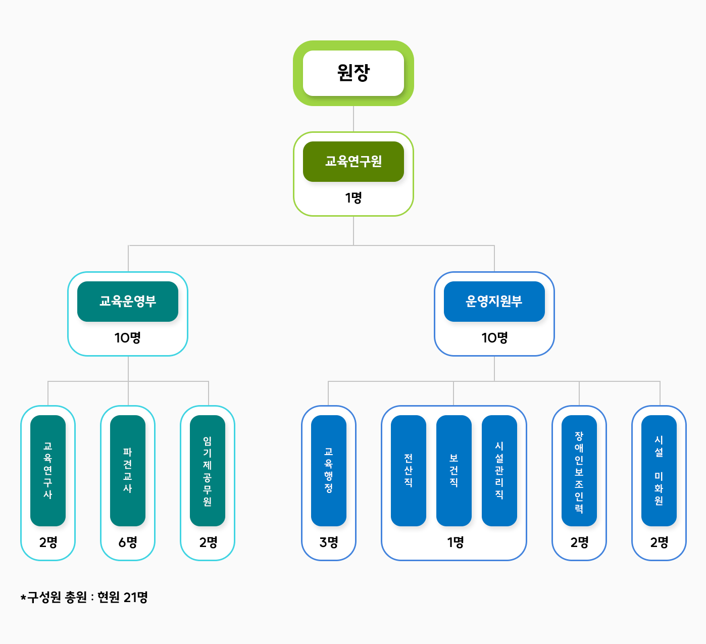

교육원 소개
조직도업무

- 원장
- 교육연구원 1명
- 교육운영부 10명
- 교육연구사 2명
- 파견교사 6명
- 임기제공무원 2명
- 운영지원부 10명
- 교육행전 3명
- 전산직 1명
- 보건직 1명
- 시설관리직 1명
- 장애인보조인력 2명
- 시설 미화원 2명
- 교육운영부 10명
- 교육연구원 1명
-
교육운영부
교육운영부 직위(직급) 성명 분장사무 전화번호 교육운영부장
(교육연구사)김순정 - · 교육운영부 업무 총괄
- · 교육운영부 1팀 총괄
- · 유아체험교육원 운영계획 수립
- · 중장기 발전계획 수립
- · 직속기관 평가 관리
- · 교육운영부 의회, 대외 업무
- · 교육전문직 인사 및 복무관리
- · 파견교사 모집 및 복무관리
- · 임기제공무원 운영지원(복무관리 등)
- · 교사 대체인력 채용
- · 교육운영부 위원회 총괄
- · 방문객 운영 지원
- · 업무분장 담당
031-869-2920 [교육1팀]
파견교사김지수 - ‣ 체험프로그램 운영 및 교육
- · 유아주도적 놀이를 위한 놀이 가이드
- - 안전한 놀이 지원을 위한 놀이 전문가 역할 수행
- - 인솔교사의 놀이지원 및 놀이협력교사
- - 담당구역 안전점검 및 체험물 관리
- - 놀이기록․평가
- · 사전연수 매뉴얼 제작
- (인쇄본 및 영상물 포함)
- · 교원연수업무(직무연수 안내등)
- · 자원봉사자모집․관리(교육자원)
- · 그 외 원장이 정하는 업무
031-869-2921 [교육1팀]
파견교사이준경 - ‣ 체험프로그램 운영 및 교육
- · 유아주도적 놀이를 위한 놀이 가이드
- - 안전한 놀이 지원을 위한 놀이 전문가 역할 수행
- - 인솔교사의 놀이지원 및 놀이협력교사
- - 담당구역 안전점검 및 체험물 관리
- - 놀이기록․평가
- · 운영계획서 및 브로슈어 제작
- · 영상제작(놀이활동)
- · 파견교사 모집업무 지원
- · 교육운영부 의회 업무지원
- · 그 외 원장이 정하는 업무
031-869-2922 [교육1팀]
파견교사김은환 - ‣ 체험프로그램 운영 및 교육
- · 유아주도적 놀이를 위한 놀이 가이드
- - 안전한 놀이 지원을 위한 놀이 전문가 역할 수행
- - 인솔교사의 놀이지원 및 놀이협력교사
- - 담당구역 안전점검 및 체험물 관리
- - 놀이기록․평가
- · 체험프로그램 기획
- · 영상제작(홍보영상)
- · 교육운영부 각종위원회(물품선정위원회 등) 운영 지원
- · 그 외 원장이 정하는 업무
031-869-2923 [교육1팀]
임기제 공무원정효진 - ‣ 체험프로그램 운영 및 교육
- · 유아주도적 놀이를 위한 놀이 가이드
- - 안전한 놀이 지원을 위한 놀이 전문가 역할 수행
- - 인솔교사의 놀이지원 및 놀이협력교사
- - 담당구역 안전점검 및 체험물 관리
- - 놀이기록․평가
- · 어린이날 및 틈새 체험 기획
- · 놀이체험 활동 결과·평가(만족도조사 포함)
- · 일반서무
- · 국어책임관 관련업무
- · 그 외 원장이 정하는 업무
031-869-2924 연구사 이선영 - · 교육운영부 2팀 총괄
- · 체험교육원 안전교육 계획 수립
- · 직속기관 평가 계획·운영
- · 지역연계 프로그램 총괄
- · 교육운영부표창
- · 자문단(학부모, 교사, 유아) 운영
- · 유치원 및 어린이집 이용 총괄
- · 찾아가는 체험 버스 기획·운영 총괄
- · 그 외 원장이 정하는 업무
031-869-2930 [교육2팀]
파견교사김윤정 - ‣ 체험프로그램 운영 및 교육
- ·유아주도적 놀이를 위한 놀이 가이드
- - 안전한 놀이 지원을 위한 놀이 전문가 역할 수행
- - 인솔교사의 놀이지원 및 놀이협력교사
- - 담당구역 안전점검 및 체험물 관리
- - 놀이기록․평가
- · 대외행사(개관식 등) 기획
- · 홍보 계획 수립 및 운영(보도자료 포함)
- · 월중 업무추진계획 및 직원회 운영
- · 그 외 원장이 정하는 업무
031-869-2931 [교육2팀]
파견교사유혜민 - ‣ 체험프로그램 운영 및 교육
- ·유아주도적 놀이를 위한 놀이 가이드
- - 안전한 놀이 지원을 위한 놀이 전문가 역할 수행
- - 인솔교사의 놀이지원 및 놀이협력교사
- - 담당구역 안전점검 및 체험물 관리
- - 놀이기록․평가
- · 지역연계 프로그램(기획전시-공모기획, 기관연계) 기획
- · 교육운영부 연수기획(전문적 학습 공동체 포함)
- · 그 외 원장이 정하는 업무
031-869-2932 [교육2팀]
파견교사송지연 - ‣ 체험프로그램 운영 및 교육
- ·유아주도적 놀이를 위한 놀이 가이드
- - 안전한 놀이 지원을 위한 놀이 전문가 역할 수행
- - 인솔교사의 놀이지원 및 놀이협력교사
- - 담당구역 안전점검 및 체험물 관리
- - 놀이기록․평가
- · 토요 가족체험 기획
- · 학부모연수 운영·지원
- · 분기별 소식지 발간
- · 홍보 및 보도자료 등 홈페이지 탑재
- · 그 외 원장이 정하는 업무
031-869-2933 [교육2팀]
임기제 공무원한수빈 - ‣ 체험프로그램 운영 및 교육
- ·유아주도적 놀이를 위한 놀이 가이드
- - 안전한 놀이 지원을 위한 놀이 전문가 역할 수행
- - 인솔교사의 놀이지원 및 놀이협력교사
- - 담당구역 안전점검 및 체험물 관리
- - 놀이기록․평가
- · 유치원 및 어린이집 이용 지원
- · 찾아가는 체험버스 운영 지원
- · 물품품의
- · 비품, 간행물, 소모품 관리
- · 그 외 원장이 정하는 업무
031-869-2934 -
운영지원부
운영지원부 직위(직급) 성명 분장사무 전화번호 운영지원부장
교육행정6급조미진 - · 운영지원부 업무 총괄
- · 체험시설물 운영
- · 관리 및 중장기 교체계획 수립
- · 지방공무원, 교육공무직원 인사 및 상훈 관리
- · 직원 대체인력 채용
- · 기관 내 장애인 일자리 사업 업무
- · 운영지원부 소관 의회, 대외 업무
- · 임기제공무원 운영·관리 ·직속기관장 협의회
- · 공공기관 소방안전관리자, 가스안전관리자
- · 청탁방지담당관, 이해충돌방지담당관, 공무원행동강령책임관
- · 보안담당관, 분임보안담당관
- · 정보보안담당관, 분임정보보안담당관,
개인정보책임자, 공공데이터제공책임관 - · 분임징수관, 분임재무관, 분임채권관리관, 분임지출원
- · 수입금출납원, 일상경비출납원, 세입 세출외현금출납원
- · 물품관리관, 물품출납원, 물품운용관
031-869-2910 교육행정7급 임현지 - ·물품, 용역, 공사계약(입찰)관리 및 집행
- ·예산편성 및 결산 관리
- ·각종 감사 및 반부패 청렴업무
- ·부서장 사무인계인수 업무
- ·운영지원부 업무 소관 교직원 직장 교육
- ·교육시설안전인증 관련 업무
- ·시설물 점검 및 위험성 평가 관리
- ·방화(소방) 시설 관리
- ·에너지 관리 및 절약 관련 업무
- ·관인관리
- ·정부3.0 업무, 성과관리
- ·보안(당직, 비상계획, 민방위 포함)업무
- ·경기도의회 관련 업무
031-869-2911 교육행정7급 심숙영 - ·교직원급여·공제회·연금 업무
- ·교직원 4대 보험, 맞춤형복지 업무
- ·일상경비 교부 및 지출(여비 및 공공요금, 강사수당 포함)
- ·법인카드 관리 및 재정정보 공개
- ·자금 한도 배정
- ·지방공무원·교육공무직원 복무 관리, 교육훈련, 간담회 추진
- ·운영지원부 소속 자원봉사자 모집·관리
- ·세입세출외현금 및 세입 업무
- ·물품 및 공유재산관리
- ·기록물 관리 및 기관 공문 배부
- ·민원 및 정보공개 업무
- ·산업안전보건관리 및 중대산업재해 예방 업무
- ·시설공제회 업무
- ·부서 총무 업무(공무원증, 비상연락망, 차량요일제,
사무용품 및 각종 대장(증빙서) 관리,
타 부서 협조, 자료 취합 등) - ·외부인 출입 통제
031-869-2912 전산6급 신정환 - ·전산실(서버실) 및 전산 소모품 관리
- ·기관 정보보안 및 개인정보보호 업무
- ·정보화기기 및 소프트웨어 관리
- ·공공데이터 관리
- ·교육통계
- ·기관 홈페이지 관리
- ·휴대용저장매체등록관리시스템 운영
- ·업무포털, K-에듀파인, 나이스, 경기교육통합메신저 사용자 권한 관리 및 점검
- ·사이버 보안 진단의 날 계획 수립 시행
- ·체험활동 안전운영 지원
- ·스쿨넷서비스 운영 및 무선망 관리
031-869-2913 보건6급 정수연 - ·보건실 운영 및 약품 관리
- ·유아 건강관리 지원
- ·감염병 예방 및 관리
- ·먹는 물 위생 관리
- ·실내 공기질 관리, 고농도 미세먼지 대응
- ·원내 방역 및 실내외 체험시설 환경 위생 관리
- ·어린이 활동공간 환경위생 및 위해성 관리
- ·어린이 놀이시설 설치 및 관리 지원
- ·4대 폭력예방, 응급처치, 아동학대예방,
긴급복지 신고의무자, 장애인인 식개선 직장 교육 - ·직장 내 성희롱, 성폭력 방지조치 및 성 고충 상담 창구 운영
- ·직원 건강검진 안내, 기타 보건위생 관리 업무
- ·체험활동 안전운영 지원
031-869-2917 시설관리7급 안성규 - ·시설관리실 및 시설물품 관리
- ·승강기 안전관리자, 어린이 놀이
시설 안전관리자 - ·시설물 법정관리자 업무
- ·시설운영 및 안전점검 업무 운영 총괄
- ·건축, 기계설비(냉난방기), 전기·
통신, 소방(방재)시설 관리
- ·안전점검의 날 계획 수립 및 점검
- ·시설물통합정보시스템 작성 및
보고에 관한 사항
- ·시설 소규모 수선 지원
- ·시설 유지 점검 및 정기검사,
시설물 관리 위탁 업무
- ·실내·외 체험시설물 유지관리
- ·각종 행사 시 주차 관리
- ·실내·외 환경정리 및 조경관리
- ·체험활동 안전운영 지원
- ·방송(CCTV운영 포함)시스템 관리
031-869-2918 시설미화원(2명) 황말남 - ·체험실, 화장실, 공용면적 (복도, 계단 등) 청소관리
- ·재활용 분리수거 및 기타 환경미화 관리
031-869-2914 김옥희 - ·체험실, 화장실, 공용면적 (복도, 계단 등) 청소관리
- ·재활용 분리수거 및 기타 환경미화 관리
031-869-2914 교육공무직원 (2명) 이찬형 - · 안내데스크 관리, 우편물 및 택배 관리
- · 외부인 출입통제 지원
- · 각실 보안점검표 관리
- · 주차관리 지원
- · 실/내외 영역별 체험운영 보조(유아놀이도우미)
- · 기타행정 및 체험운영 관련 보조
031-869-2915 조용현 - · 안내데스크 관리, 우편물 및 택배 관리
- · 외부인 출입통제 지원
- · 각실 보안점검표 관리
- · 주차관리 지원
- · 실/내외 영역별 체험운영 보조(유아놀이도우미)
- · 기타행정 및 체험운영 관련 보조
031-869-2916